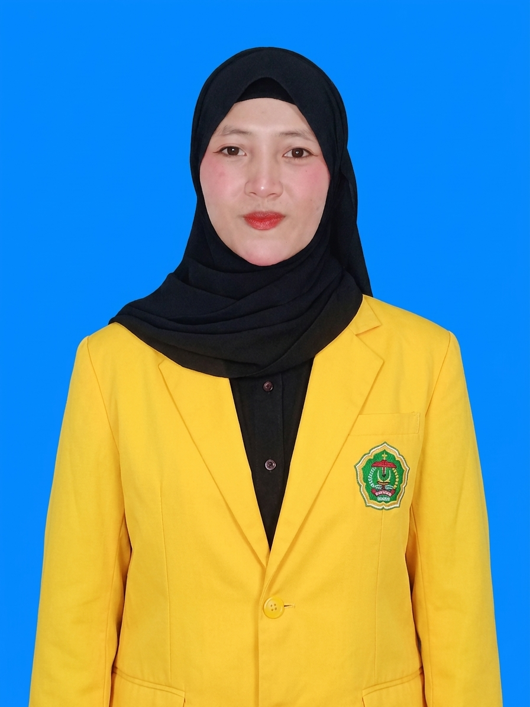

Di balik setiap baris kode, ada ide yang menunggu untuk diwujudkan. Saya percaya bahwa teknologi bukan hanya tentang menciptakan sistem, tetapi tentang menghadirkan solusi dan memberikan manfaat bagi kehidupan.
Kenali Saya
Perkenalkan, saya Sintia, seorang mahasiswa Program Studi Informatika di Universitas Cokroaminoto Palopo. Saya memiliki ketertarikan dalam bidang teknologi informasi, khususnya pengembangan website.
Bagi saya, menjadi mahasiswa bukan hanya tentang mengikuti perkuliahan, tetapi juga tentang terus belajar, mencoba hal baru, dan mengembangkan kemampuan diri. Setiap pengalaman merupakan kesempatan untuk bertumbuh dan menjadi lebih baik.
Saya ingin menjadikan ilmu yang saya pelajari sebagai bekal untuk menciptakan sesuatu yang bermanfaat, baik bagi diri sendiri maupun orang lain.
Informasi singkat mengenai diri saya.
Sintia
Perempuan
Tobela, 25 November 2005
Islam
Informatika
Teknik Komputer
Universitas Cokroaminoto Palopo
2024
Website
7 dari 8 bersaudara
Sudding
Masnia
Desa Tobela, Kecamatan Porehu
Kolaka Utara, Sulawesi Tenggara
Perjalanan pendidikan yang telah saya tempuh.
Sekolah Dasar
Sekolah Menengah Pertama
Sekolah Menengah Atas
Program Studi Informatika · Angkatan 2024
Beberapa pengalaman dan pencapaian dalam perjalanan saya.
Berpartisipasi dalam Program Kreativitas Mahasiswa (PKM) dan berhasil lolos pada tahap pendanaan.
Menerbitkan buku berjudul "Pengantar Keamanan Komputer" sebagai salah satu kontribusi dalam bidang ilmu pengetahuan dan teknologi.
Terpilih sebagai finalis Duta Inspirasi Mahasiswa 2026. Sebuah pengalaman untuk terus belajar, berkembang, dan memberikan inspirasi melalui tindakan nyata.
THANK YOU FOR VISITING MY WEBSITE